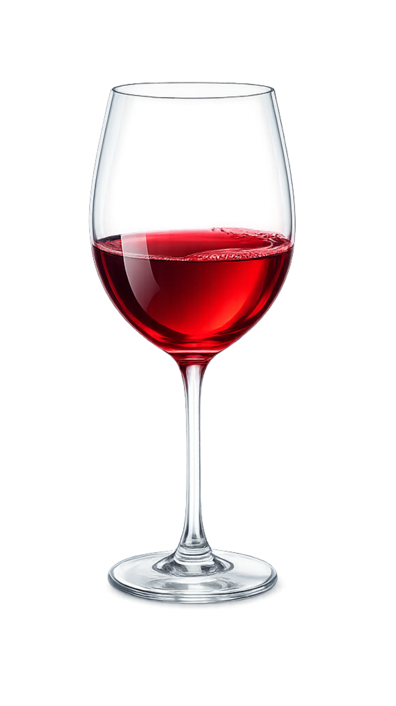
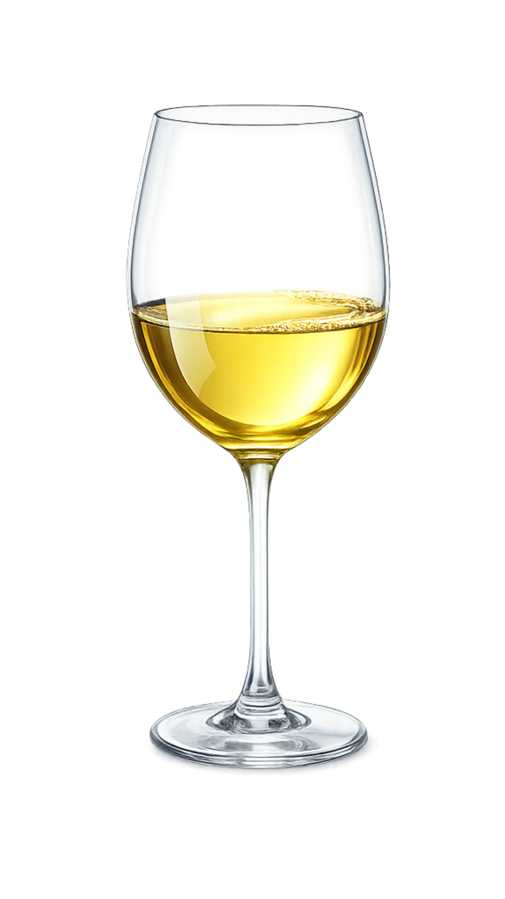

Ouvert du Mardi au Dimanche


Une cuisine vivante, des vins qui parlent,
une table où il fait bon s'attarder.
001 — Notre Philosophie
Nous croyons que manger est un acte politique, sensuel et poétique. Ici, rien n'est figé : la carte change au gré des saisons, des arrivages, de l'humeur du chef. Ce qui demeure constant, c'est l'exigence du goût et la générosité de l'accueil.
Poussan est notre terroir. Ses vignobles, ses maraîchers, ses éleveurs. ils sont la matière première de chaque assiette. Nous sommes un restaurant de village avec l'ambition d'une grande table.
Découvrir la carte002 — La Carte
Carte mise à jour le —
Huile d'olive du moulin de Beaulieu · fleur de sel de Camargue
Poulpe de Sète · citron de Menton · câpres de Pantelleria
Chèvre de la ferme des Oliviers · courgettes du jardin
Saucisson sec, coppa, bresaola · cornichons maison
Pêche locale · fenouil de Frontignan · huile d'olive vierge extra
Agneau élevé en plein air · romarin de Garrigue · pommes de terre Sarladaises
Gambas de Sète · riz Carnaroli · encre de seiche · aïoli provençal
Volaille Label Rouge · légumes de saison · jus corsé maison
Tradition revisitée · cassonade caramélisée à la minute
Chocolat noir 70% Guanaja · glace turbinée sur place
Figues du jardin · crème d'amande · pâte feuilletée maison
Sélection de 3 fromages · confiture maison · pain de campagne
Allergènes disponibles sur demande · Menu enfant sur demande · Prix nets, service compris
003 — La Cave
Notre sélection privilégie les vins naturels, biodynamiques et issus de l'agriculture raisonnée. Languedoc-Roussillon en tête, mais aussi quelques voyages en Bourgogne, Loire et Jura.
Le sommelier est présent chaque soir pour vous guider. Aucune question n'est stupide. Le vin doit être un plaisir, pas une intimidation.
28 références
9 références
12 références
11 références
Sélection du moment ↓
004 — Ce qu'ils disent
"Antre Deux Verres est une vraie adresse de passionnés, rare et sincère.
Le patron/chef est avant tout un amoureux du vin, et ça se sent immédiatement : il est généreux, très communicatif, et surtout doté d’une connaissance profonde des bouteilles qu’il propose. La carte est clairement pensée pour les amateurs pointus et curieux, avec de superbes références qu’on ne croise pas partout : Jura (Overnoy, Savagnin), Loire de grande classe (Domaine du Collier), Bourgogne de caractère (Derain), Champagne hors normes, Sicile de vignerons engagés… bref, une sélection exigeante, cohérente, assumée.
Mais — et c’est important — il y en a pour tout le monde. Même si on n’est pas “geek du vin”, on trouve de très bons vins au verre, accessibles et bien choisis. On peut venir ici sans être expert et se faire plaisir, ou au contraire pousser la discussion très loin si on aime ça. Le lieu ne juge pas, il partage.
Côté cuisine, on est sur une brasserie gourmande, bien faite, avec peu de plats mais du fait maison, pensé pour accompagner le vin. En entrée, un superbe risotto de morilles avec œuf poché, réconfortant et précis.
Sur la grande planche à partager : trois viandes parfaitement maîtrisées — un porc mariné absolument magistral, une côte de bœuf servie bleue comme il faut, et un agneau cuit longuement, fondant et plein de goût. Simple en apparence, mais exécuté avec beaucoup de justesse.
Le restaurant est un peu à l’écart des grandes villes, mais le détour en vaut largement la peine. Le village a beaucoup de charme et l’étape est idéale, d’autant plus que ce n’est pas loin de la lagune de Thau. Une vraie bonne idée de pause gastronomique et vinique dans la région.
Une adresse conviviale, authentique, sans posture, où l’on vient pour boire (très) bien, manger bon, et échanger.
À recommander sans hésiter — que l’on soit amateur averti ou simplement curieux."
"Un petit lieu unique avec un super service et des plats de qualité. Comme toujours, Antoine nous a régalé avec sa planche Côte de Bœuf Maturée et ses accompagnements. Ainsi que ses conseils viticoles adaptés au gout de chacun et qui accompagne au mieux ce plat."
"Nous sommes fidèles depuis l'ouverture.
Toujours un plaisir et un régal.
Je recommande à 100% .
Du bon vin et des cocktails très bon également.
Un accueil parfait.👍 🍷🍸"
"Nous avons réservé ce restaurant un peu par hasard, avec l’envie de manger des tapas. Et quelle belle surprise !
Un accueil chaleureux, une petite carte mais avec du choix. Les planches de charcuterie et de fromage sont excellentes et bien garnies. Le pain servi avec les tapas est super bon et, sans trop prendre de risques, il doit venir d’une boulangerie artisanale.
Et je ne peux pas terminer cet avis sans parler de la brioche façon pain perdu, qui était tout simplement succulente.
Désormais, à Poussan, nous avons notre adresse : dès que nous serons dans le coin, nous y retournerons.
Encore merci pour le service."
05 — Infos Pratiques
| Lundi | Fermé |
| Mar — Ven | 12h–14h / 19h–22h |
| Samedi | 12h–14h30 / 19h–22h30 |
| Dimanche | 12h–14h30 |
006 — Réservation
Pour les groupes de plus de 6 personnes, merci de nous appeler directement. Pour les événements privés (anniversaires, repas d'affaires), contactez-nous par e-mail.
Annulation gratuite jusqu'à 24h avant.